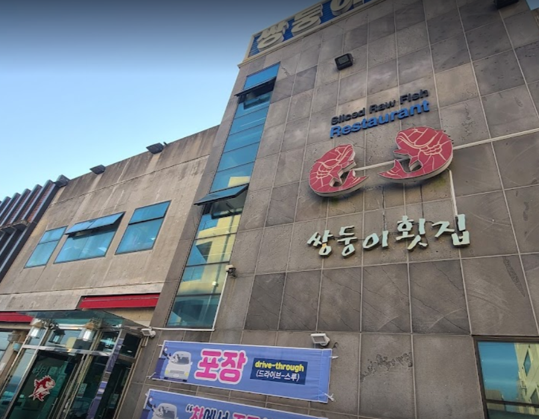
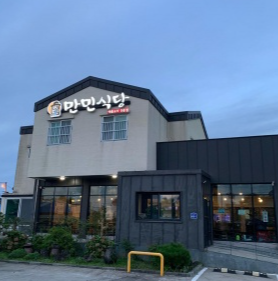
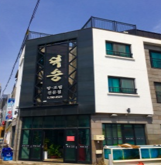

제주 맛집 리스트

서귀포 아케이드 상가 입구에 위치합니다. 서귀포 사람들이 회를 먹기 위해 자주 찾는 곳으로, 식사 시간이 되면 줄을 서야 먹을 수 있다고 합니다. 아이들을 위해서 곁반찬으로 다양한 음식과 후식도 알차 게 나옵니다. 저녁시간대는 사람이 많으니 미리 예약을 하면 좋습니다.
- 상호명
- 쌍둥이횟집본점
- 전화번호
- 064-762-0478
- 이용시간
- 점심:11:00 ~ 22:30
저녁:11:00 ~ 22:30
- 대표 메뉴
-
- 4인 자특 모듬스페샬
- 4인 특 모듬스페샬
- 4인 모듬스페샬
- 주소
- 주특별자치도 서귀포시 서귀동 496-18
- 홈페이지
- 바로가기

서귀포 아케이드 상가 입구에 위치합니다. 서귀포 사람들이 회를 먹기 위해 자주 찾는 곳으로, 식사 시간이 되면 줄을 서야 먹을 수 있다고 합니다. 아이들을 위해서 곁반찬으로 다양한 음식과 후식도 알차 게 나옵니다. 저녁시간대는 사람이 많으니 미리 예약을 하면 좋습니다.
- 상호명
- 만민식당
- 전화번호
- 064-796-4473
- 이용시간
- 저녁:09:00 ~ 21:00
저녁:09:00 ~ 21:00
- 대표 메뉴
-
- 갈치조림
- 고등어조림
- 전복구이
- 주소
- 제주특별자치도 제주시 한림읍 동명리 138-6
- 홈페이지
- 바로가기

모슬포 항구에 조그맣게 자리잡은 덕승식당은 고깃배 '덕승호'에서 갓잡은 활어만을 사용해 요리합니다. 조림 특유의 자극적인 맛 대신 짜지않고 심심하면서도 적당하게 맞춘 간과 부들부들한 제주도 갈치의 식감이 어우러지는 갈치조림이 인기 메뉴입니다.
- 상호명
- 덕승식당
- 전화번호
- 064-794-0177
- 이용시간
- 저녁:09:00 ~ 21:00
- 대표 메뉴
-
- 한치물회
- 자리물회
- 회덮밥
- 주소
- 제주특별자치도 서귀포시 대정읍 하모리 770-3
- 홈페이지
- 바로가기